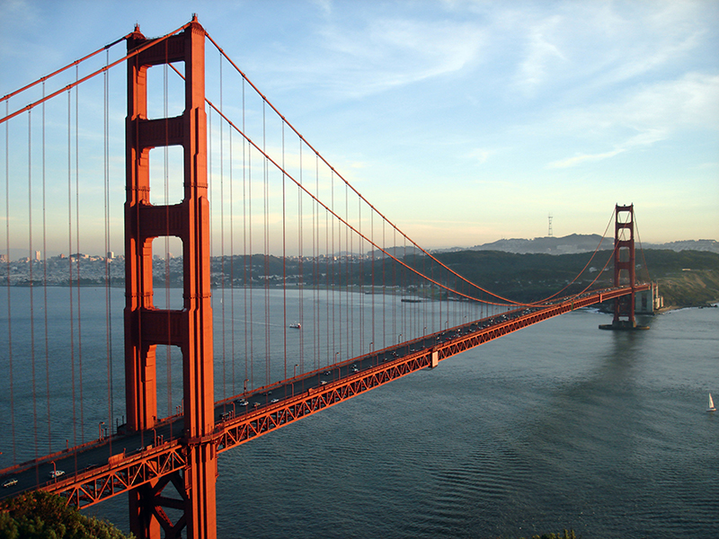

1. Golden Gate Bridge, California
Spanning two miles of water and capable of withstanding winds of more than 100 mph, this bridge is a testament to American engineering and determination. It is an indelible part of this nation’s iconography.
Spanning two miles of water and capable of withstanding winds of more than 100 mph, this bridge is a testament to American engineering and determination. It is an indelible part of this nation’s iconography.
Sculpted in 1920 by Daniel Chester French, the colossal seated likeness of President Abraham Lincoln is located on the historic Nation Mall. The sculpture’s imposing presence is truly moving to experience.
This iconic sign once read “Hollywoodland,” and was actually created in 1923 to advertize a local real estate development. Today, the sign is a symbol of American film and glamor.
This lovely lady was given as a gift from the nation of France in 1886. She cuts a striking figure at 152 feet tall, and rests on pedestal that adds another 89 feet to her height. This landmark symbolized a new life for many immigrants approaching New York City via ferry.
This military cemetery in Arlington County is one of the most recognizable burial grounds in the world. Its uniform, marble headstones extend over the rolling hills of the cemetery. The Arlington Memorial Amphitheater is also quite beautiful.
What could be more American than the looming faces of four white men carved into the living granite of a mountainside? Mount Rushmore is a beautiful monument to the legacies of presidents George Washington, Thomas Jefferson, Abraham Lincoln and Theodore Roosevelt. The Lakota Sioux knew the mountainside as "The Six Grandfathers" before it was renamed in 1885 after Charles Rushmore, a New York lawyer. It attracts more than two million visitors annually.
Carved by the powerful Colorado River over millions of years, the Grand Canyon is one of the most recognizable natural landmarks in America. Its overwhelming immensity and beauty must be experienced to be understood.
Removal Act of 1830 caused the death of over 10,000 Native American people over the course of a grueling relocation program. The landmarks along the path that they followed from the Southeastern United States to land west of the Mississippi are a stark reminder of this national horror.
Rising 605 feet into the air above Seattle, the Space Needle is an icon of the Pacific Northwest. America certainly has a penchant for reaching sky-high, and this building is a symbol of our architectural ambition and great spirit.
In 1836, Texan volunteers defended this former Franciscan mission against assault by Mexican forces. The 189 volunteers lost their lives, but their legacy of freedom and valiance lives on.
The building’s simple moniker belies its pivotal place in American history. Some of the most important decisions in modern times were made from this building.
This self-guided trail is set into the streets of Boston. Following the red brick line through the city will bring you to some of the most historical important sites in the city, including Faneuil Hall (where the Declaration of Independence was first read) to the site of the Boston Massacre.
Formerly called the “Custer Battlefield National Monument,” this was the site of the 1876 Battle of Little Big Horn. During the battle, Lakota, Dakota, Northern Cheyenne and Arapaho warriors triumphed over General Custer’s forces after the later launched an attack on a nearby Native village. More than 400 people were killed, and the site features memorials to both sides.
Symbolizing Missouri’s place as the “Gateway to the West,” this massive structure is just as much art as it is architecture.
Located in Midtown Manhattan in New York City, this major commercial intersection is a symbol of bright and tireless energy of one of the nation’s most famous cities.
This stretch of land is lousy with great American sites, so much so that it definitely qualifies as a landmark itself. Between the Washington Monument, the Lincoln Memorial and the Vietnam Memorial, it’s hard not to feel the patriotism in the air.
This building has housed more than its fair share of historical moments. The Declaration of Independence was signed here, and George Washington assumed his position as commander of the Continental Army within the hall.
The Hoover Dam is a symbol of America’s engineering prowess. At the time of its construction in 1931, it was the largest concrete structure to have ever been built. The dam creates Lake Mead, another beautiful American landmark.
Looking more like somethings out of Egypt than a monument to our nation’s first president, the Washington Monument soars above the National Mall in Washington D.C. It’s the world’s tallest stone structure and obelisk at a stunning 554 feet.
This ancient fort played host to the first battle of the Civil War on April 12, 1861. Spectators actually turned out to watch the battle, and it was one of the most celebrated victories of the Confederate Army. Today, Fort Sumter National Monument is open for public tours.
During World War II, over 110,000 Japanese residents of the United States were forcibly held in isolated military “internment” camps. Two-thirds of these prisoners were American citizens who had previously been living ordinary lives. The Manzanar site was one of 10 such camps. It is important to remember the cruelty that can be born from fear, ignorance and cultural intolerance.
How many of these all-American landmarks have you visited?